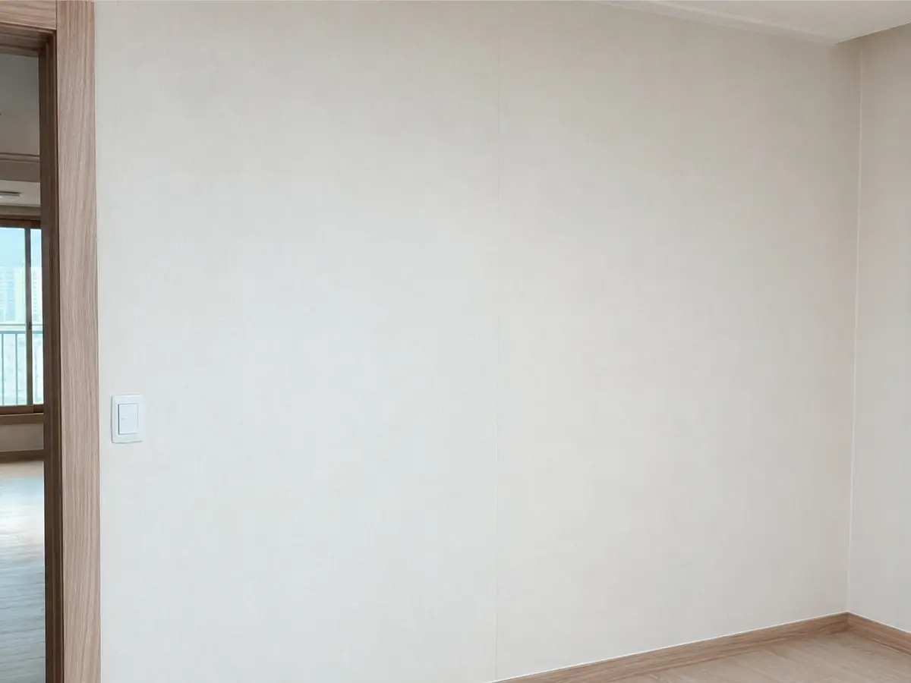
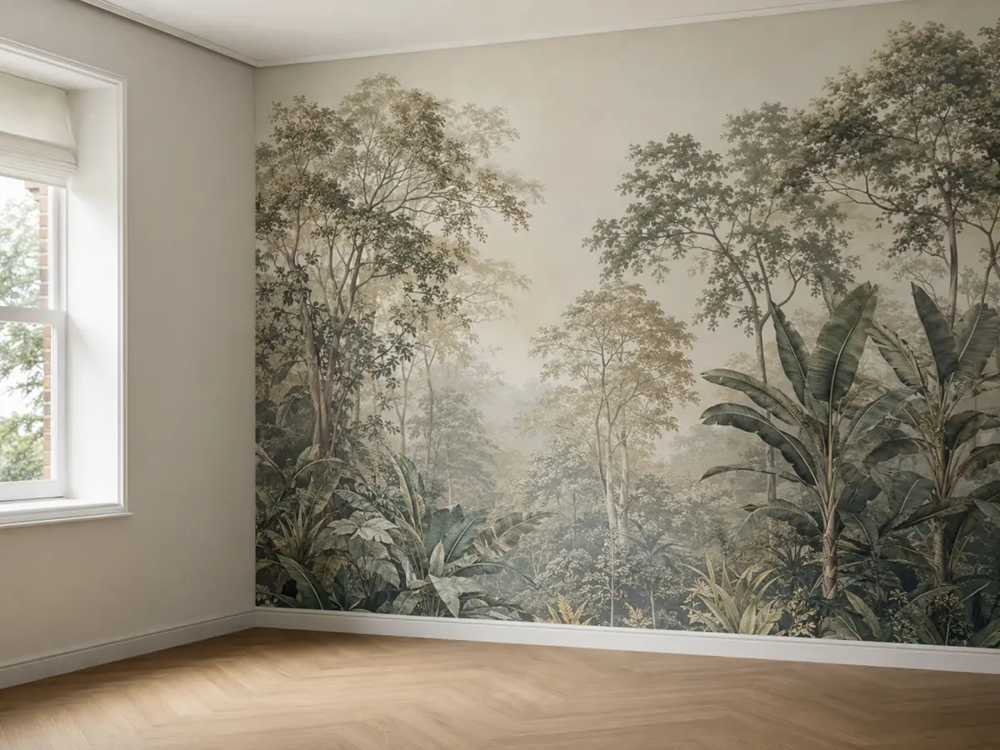
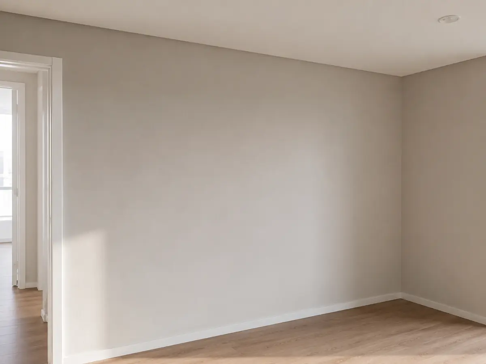

벽지 (도배)
한 줄 결론
오래 살 거면 실크, 임대용·예산 우선이면 합지. 가격 차이는 평당 1~2만원, 내구성 차이는 5년 이상.
종류별 비교
실크 벽지
광범위 표준
5~7만원/평 (자재+시공)
물기·먼지에 강함, 색감 풍부
합성소재 특유의 광택, 통기성 낮음
합지 벽지
가성비·임대용
3~4만원/평 (자재+시공)
통기성·친환경, 빠른 시공
물에 약함, 변색 빠름
뮤럴 / 포인트
디자인 강조
8~30만원/평 (디자인별)
한 면 임팩트, 침실·아이방 포인트
교체 시 패턴 단종 위험
예시 사진 (실물 비교)
사진은 README 경로에 업로드하면 자동 노출됩니다.




평당 단가 가이드
서울 기준 2026.05. 자재 등급·평수·층고에 따라 ±20% 변동.
| 구분 | 자재만 | 자재 + 시공 | 비고 |
|---|---|---|---|
| 합지 (일반) | 1.5~2.5만원/평 | 3~4만원/평 | 면적 작을수록 단가↑ |
| 실크 (보급) | 3~4만원/평 | 5~6만원/평 | 가장 대중적 |
| 실크 (프리미엄) | 5~8만원/평 | 7~12만원/평 | LX·신한·DID 상위 라인 |
| 뮤럴 | 10~25만원/㎡ | +시공비 별도 | 디자인 라이선스 별도 |
시공 프로세스
- 퍼티·평탄작업 — 기존 도배지 제거 후 벽면 결함 메움 (이 단계가 마감 품질의 70%)
- 프라이머 도포 — 풀 흡수·곰팡이 방지
- 풀칠·재단 — 풀 농도, 풀 먹임 시간이 마감 차이
- 도배 — 맞댐(실크) 또는 겹침(합지)
- 건조 (24~48시간) — 습도가 높으면 곰팡이·들뜸
25평 기준 1~2일이면 완료. 단, 퍼티가 많이 필요한 노후 주택은 +1일.
계약 시 체크포인트
자재 명시
LX·신한·DID 등 브랜드 + 품번 + 시리즈 등급
시공 범위
‘천장 포함/제외’, ‘몰딩 도색 포함/제외’ 명기
퍼티 작업
평탄작업 포함 여부 — 별도 비용으로 책정되는 경우 많음
철거·폐기
기존 벽지 제거·폐기 비용 포함 여부
하자 보증
최소 1년 (들뜸·곰팡이·이음 벌어짐)
시공 후 자주 발생하는 하자
⚠
들뜸·곰팡이는 ‘재시공’ 사유
입주 1년 내 발생한 들뜸·곰팡이·이음 벌어짐은 시공 하자로 봅니다.
- 들뜸 — 풀 농도 부족 또는 건조 환경 불량. 부분 재시공.
- 이음 벌어짐 — 건조 수축. 보통 1~2달 내 발생, 보수 시공 요청.
- 곰팡이 — 결로 또는 누수. 단열·환기 함께 점검.
- 색상 차이 — 같은 품번도 ‘로트(생산회차)’가 다르면 색감 차이. 한 번에 충분량 발주가 원칙.
출처
- 한국벽지공업협회 · LX하우시스·신한벽지 시공 매뉴얼
- 한국소비자원 인테리어 분쟁 사례집
- 실내공기질 관리법 시행규칙 (TVOC·포름알데히드)
⚠
면책
가격·시공 정보는 일반적인 시장 관행에 기반한 참고용입니다. 정확한 단가는 현장 견적을 받으세요.